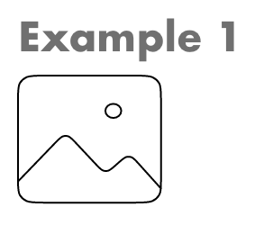
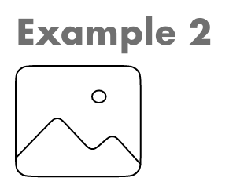

Absolute File Paths
An absolute URL shows the entire path to the file, including the scheme, the server name, the complete path, and the file name itself. The location of the absolute URL itself has no bearing on the location of the actual file referenced. When you are referencing a file from someone else's server, you'll always use an absolute URL.
This is an absolute path to a webpage.Relative File Paths
A relative URL describes the location of the desired file with reference to the location of the file that containers the URL reference itself. So, you might have the URL say something link "link to the xyz page that's in the same directory as this page.
The relative URL for a file that is in the same directory as the current page is simply the file name and extension. You create the URL for a file in a subdirectory of the current directory by typing the name of the subdirectory followed by a forward slash and then the name and extension of the desired file.
If you aren't developing your site locally on a server, then generally you'll want to use relative URLs (except when pointing to files on someone else's server, of course). They'll make it easy to move your pages from a local system to a server. As long as the relative position of each file remains constant, you won't have to change any of the paths, so the links will work correctly.
Example 1: Relative to the Current Folder
Linking to a file within the same folder.
Example 2: Relative to Subfolder (Subdirectory)
Linking to a file in a subfolder within the current folder.
